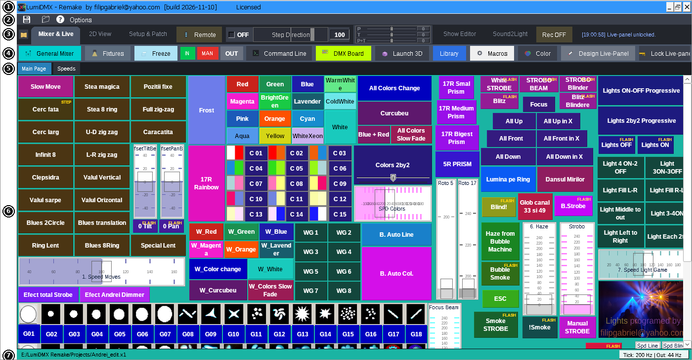
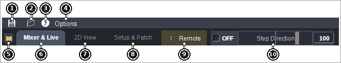
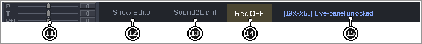
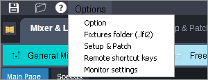
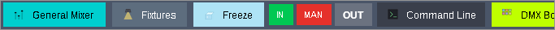
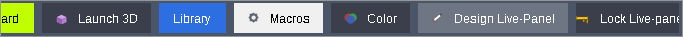

For: FullPlayer
The window is made for a screen of 1366 x 768 and larger. Here it shows a project in Mixer & Live, the work area of the show.

The main window: a project open in Mixer & Live.
| 1 | The title bar - the name of the program, its author, the date of its build, and Licensed: this copy is activated (see Activation). |
| 2 | The quick bar - Save, Open, Help and Options. |
| 3 | The toolbar - the project menu, the work areas, and the controls that stay at hand in every work area. |
| 4 | The function bar - the buttons of the work area you are in (here Mixer & Live). |
| 5 | The pages of the Live panel - one tab for each page of the project (here Main Page and Speeds). |
| 6 | The Live panel - the buttons, sliders and pictures of the page. A click on a button starts what it holds (a chase, a colour, a movement); see Mixer & Live. |
| 7 | The path bar - the file of the open project. On the right, Tick | Out: how many times a second the program computes the light and sends it. Click it for the live performance graph. A green lightning sign next to it: the DMX output is connected. |


The two bars at the top, in two parts: the left part above, the right part below.
| 1 | Save - saves the project. See Opening and saving a project. |
| 2 | Open - opens a project. |
| 3 | Help - opens this manual, the file
LumiDMX_Remake_Help.chm next to the program, in its own window. When the manual is open already, the
button brings it to the front. Without the file the program says where to put it. |
| 4 | Options - a menu: Option (the Option tab of Setup & Patch), Fixtures folder (.lfi2) (where the profiles of the fixtures are; see The program folder), Setup & Patch, Remote shortcut keys, Monitor settings. |
| 5 | The project menu - New Project, Open a Project (with the last projects), Save, Save as..., Options, Close X1 (closes the program). |
| 6 | Mixer & Live - the work area of the show: the Live panel and the General Mixer. |
| 7 | 2D View - the fixtures on a plan of the room. See 2D View. |
| 8 | Setup & Patch - the fixtures of the project and their addresses, the DMX interfaces, MIDI, the options. See Setup & Patch. |
| 9 | Remote - opens the remote player: Back, Play and Forward appear next to it, to run the chases step by step or let them play (a right click on them: their settings). See Remote, controllers and MIDI. |
| 10 | Step Direction - OFF / ON, the bar and its number: the speed and the direction of the chases of the fixtures chosen for it, from +100 (forwards, at their speed) through 0 (stopped) to -100 (backwards). Drag on the bar to change it; right click: choose the fixtures. |
| 11 | Pan / Tilt Size - the rows P (pan), T (tilt) and P+T (both): the movements of the chosen fixtures made smaller or bigger around their centre, from -100 (all in the centre) through 0 (as programmed) to +100 (twice as big). Drag on a row; a click on the number at its end sets it back to 0; right click: choose the fixtures and the MIDI faders. |
| 12 | Show Editor - the shows of the project. See Show Editor. |
| 13 | Sound2Light - the music drives the lights; the audio input is chosen there. See Sound2Light. |
| 14 | Rec OFF / Rec ON - stops or starts listening to the audio input for Sound2Light. |
| 15 | The status line - the last message of the program, with its time: what was loaded, saved, started or stopped. |

The Options menu of the quick bar.


The function bar of Mixer & Live, in two parts.
| Button | What it does |
|---|---|
| General Mixer | Shows or hides the mixer: the 512 channels of one universe as faders, with the name and the picture of each channel and its state. |
| Fixtures | Shows or hides Fixture Control: the fixtures of one type, to tick them and set them by hand - pan and tilt on a pad, colours, gobos, the other channels with their presets - and the Effect Generator Full for the ticked ones; the last tab gives each fixture its own correction of Pan / Tilt and Focus. |
| Freeze | Holds the light as it is now; pressed again, lets it go. With Replace Freeze with Out loop (Option) it is Out loop. |
| IN, MAN, OUT | For all the channels of the universe shown in the General Mixer: take them from the DMX input (IN), control them by hand (MAN), or give them back to the program's own output (OUT). |
| Command Line | A window where commands are typed and run at once - the same commands as in the macros. See Macros and the Command Line. |
| DMX Board | The 512 channels of one universe as a board of cells: select channels and set them, see which fixture each one belongs to and the preset it is on. |
| Launch 3D | Starts the 3D program and connects it to the Remake; pressed again, disconnects it. Right click: which 3D program it starts (Browse...). See 3D Previsualisation. |
| Library | The library of the project: shows, light sequences (chases), BPM lists, audio objects. A light sequence dragged onto the Live panel becomes a new button there. |
| Macros | The Macro Editor: named lists of commands, which buttons run with their start and stop commands. |
| Color | Shows or hides the row Display color correction (Gamma, Brightness, R, G, B): how the colours of the buttons look on this screen. It does not change the light. |
| Design Live-Panel Full | The designer of the Live panel: add, move, size and set up buttons, sliders and pictures. In the Player it says Modify here not available. |
| Lock Live-panel | Only the Live panel and its pages, on the whole screen - for the show. Esc brings the rest back. |
The other work areas (2D View, Setup & Patch, Show Editor, Sound2Light) show their own bars under the toolbar; their chapters describe them.